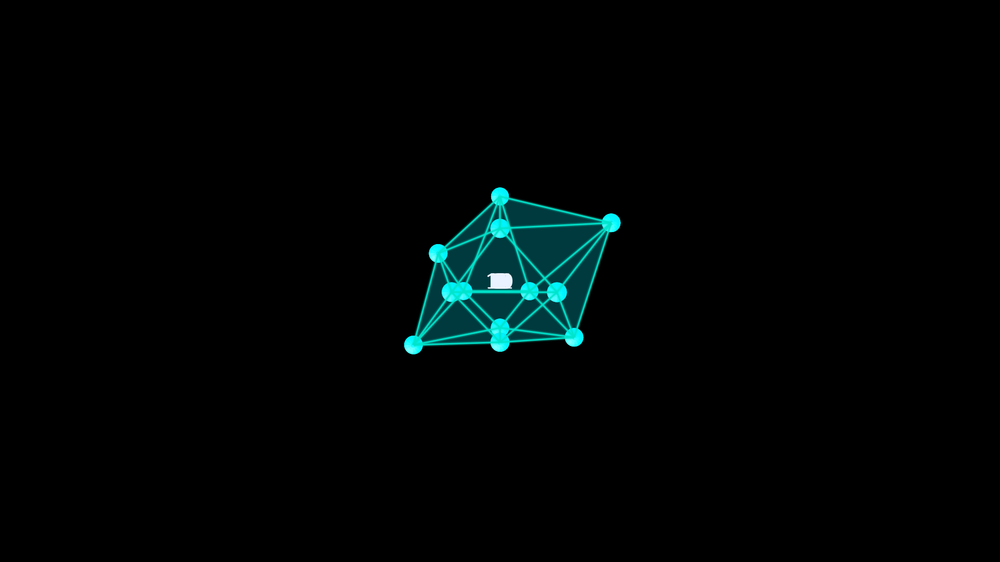
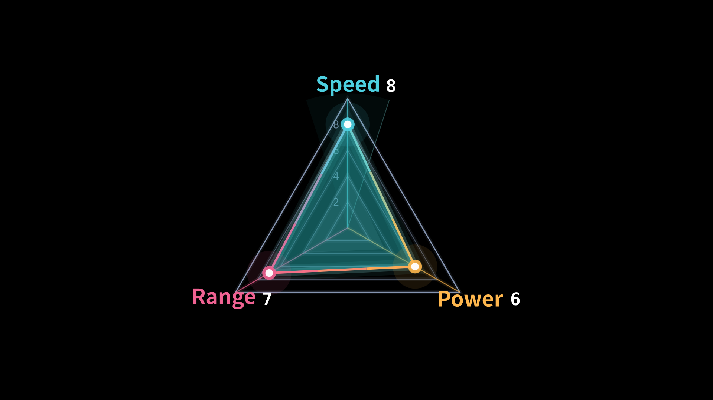
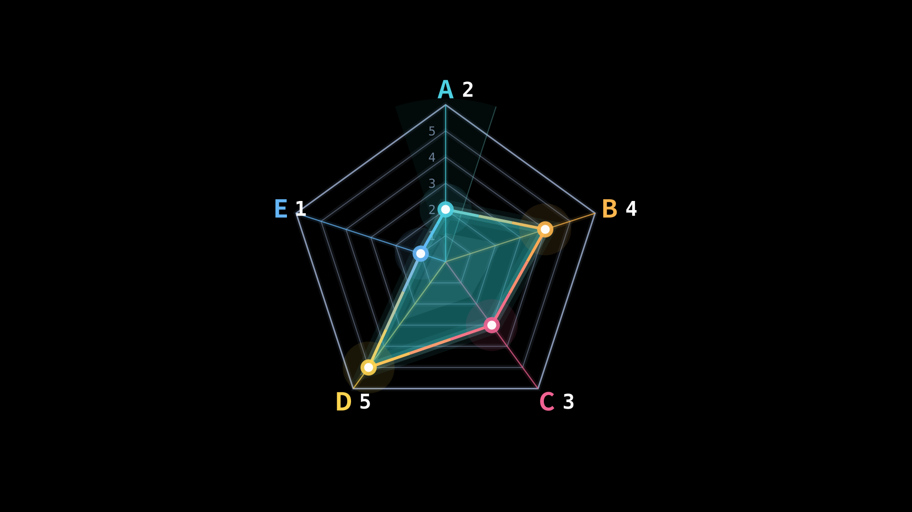
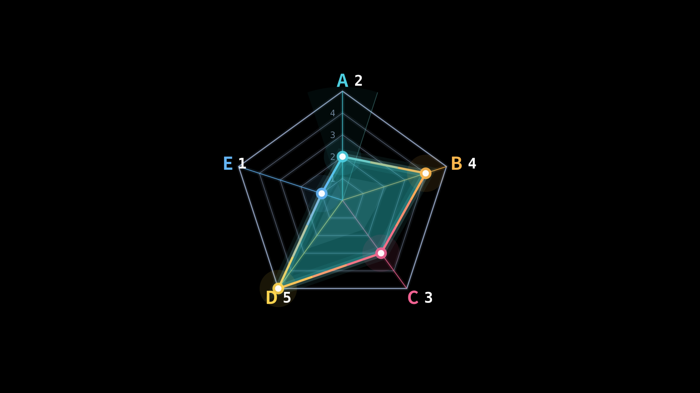
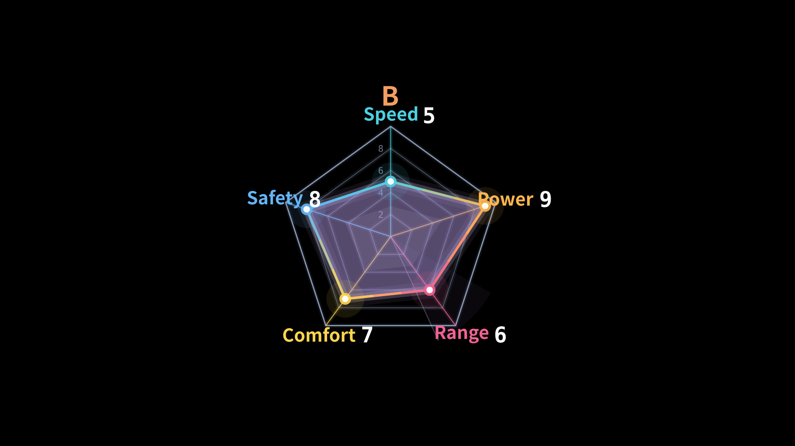
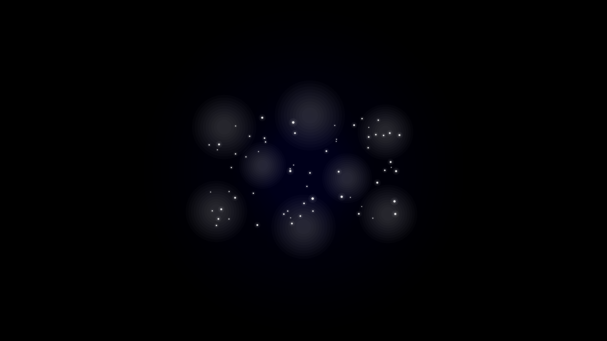
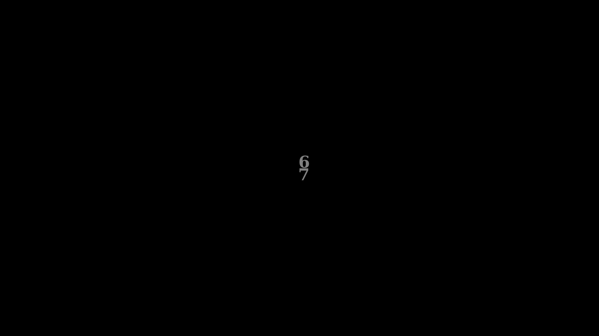

Radar Charts¶
manim-radar — animated radar (spider) charts for Manim.
Build a chart, morph it into another one with a single command, or play a whole sequence:
from manim import *
from manim_extensions.radar import RadarChart, RadarData, RadarReel, DeepSpace
AXES = ["Speed", "Power", "Range", "Comfort", "Price", "Safety"]
class Demo(Scene):
def construct(self):
chart = RadarChart(axes=AXES, values=[8, 6, 7, 9, 5, 8], title="Six axes")
self.add(DeepSpace().link(chart)) # optional starfield
self.play(chart.reveal())
# one command morphs into another snapshot
self.play(chart.morph_to([5, 9, 4, 6, 9, 7], color="#E868C8"))
# ...or play a whole sequence in one go
RadarReel(chart, [
RadarData(axes=AXES, values=[9, 9, 8, 9, 9, 9], name="All round"),
], backdrop=True).play_on(self)
- class manim_extensions.radar.RadarChart(data=None, *, axes=None, values=None, name=None, color=None, max_value=None, datasets=None, style='neo', theme='midnight', config=None, radius=None, position=None, title=None, levels=None, numbers=None, web_rainbow=None, compare_numbers=None, legend=None, sweep=None, rim=None, overflow=None, opacity=None, **kwargs)[source]¶
An animated radar (spider) chart that morphs into other radar charts.
The chart is a plain Manim mobject, so
shift/move_to/scale/rotatebehave as usual: every piece of geometry is recomputed in the chart’s own coordinate frame on each frame.- Parameters:
data (
Optional[RadarData]) – Initial snapshot; its axes define the grid whenaxesis omitted.axes (
Optional[Sequence[str]]) – Names of the axes, in clockwise order.values (
Optional[Sequence[float]]) – One numeric value per axis for the first dataset.name (
Optional[str]) – Nameplate shown above a single dataset.color (
Optional[str]) – Main polygon colour for the first dataset.max_value (
Optional[float]) – Fixed full-scale value; otherwise derived from the data.datasets (
Optional[Sequence[Any]]) – Snapshots or mappings describing several datasets at once.style (
Union[str,RadarConfig,None]) – Named radar style or a prepared configuration.theme (
Union[str,RadarTheme,None]) – Named colour theme or a prepared theme object.config (
Optional[RadarConfig]) – Configuration overriding the style defaults.position (
Optional[Sequence[float]]) – Centre point of the grid.numbers (
Optional[str]) – Per-vertex number mode, such as"none"or"value".web_rainbow (
Optional[bool]) – Whether grid segments use the rainbow palette.compare_numbers (
Optional[str]) – Number mode used while several datasets are visible.legend (
Optional[bool]) – Whether a legend is shown for multiple datasets.sweep (
Optional[bool]) – Whether the rotating sweep beam is visible.overflow (
Optional[bool]) – Whether values above the full scale trigger overflow effects.opacity (
Optional[float]) – Initial opacity of the whole chart.kwargs (
Any) – Further keyword arguments forwarded toVGroup.
Examples
Example: RadarChartScene ¶
from manim import * from manim_extensions.radar.chart import RadarChart class RadarChartScene(Scene): def construct(self): chart = RadarChart( axes=["Speed", "Power", "Range", "Comfort", "Price", "Safety"], values=[8, 6, 7, 9, 5, 8], ) self.play(chart.reveal()) self.wait(1)
Minimal chart:
chart = RadarChart( axes=["Speed", "Power", "Range", "Comfort", "Price", "Safety"], values=[8, 6, 7, 9, 5, 8], ) self.play(chart.reveal())
One command to morph into another snapshot:
self.play(chart.morph_to(RadarData(axes=..., values=[...])))
Comparison mode (new in 0.1.1) — several datasets share one grid:
chart = RadarChart(datasets=[holder_data, basic_data], theme="midnight") self.play(chart.reveal()) self.play(chart.morph_to([holder_next, basic_next])) # morph them all chart.focus(0) # dim dataset 1 chart.highlight_gap(0, 1) # tint the gap
The chart repaints every frame, so all of the calls above can be chained before the next animation.
- _coerce_item(item)[source]¶
Convert one constructor-level dataset into a validated snapshot.
- Parameters:
item (
RadarInput) – ARadarData, a mapping withaxesand value keys, or a plain sequence of values.- Return type:
- Returns:
Snapshot whose axis layout matches this chart.
- Raises:
ValueError – If axes are missing, the axis count differs, or the layout changes.
- _install_datasets(items)[source]¶
Rebuild the visible series from a sequence of snapshots.
- Parameters:
items (
Sequence[Any]) – Snapshots, mappings or value sequences to display.- Raises:
ValueError – If a snapshot has a different axis count or axis layout.
- Return type:
- _ensure_series_count(count, datasets)[source]¶
Grow the series list so a morph can fade new datasets in.
- compare(*datasets)[source]¶
Show several datasets on this grid at once without animating.
Each positional item may be a
RadarData, a mapping or a plain sequence of values. The first item fixes the axis layout.- Parameters:
datasets (
Any) – Snapshots or value sequences to display together.- Return type:
- Returns:
The same chart, allowing calls to be chained.
- Raises:
ValueError – If the first item does not define axes or the layouts differ.
- set_datasets(*datasets)¶
Show several datasets on this grid at once without animating.
Each positional item may be a
RadarData, a mapping or a plain sequence of values. The first item fixes the axis layout.- Parameters:
datasets (
Any) – Snapshots or value sequences to display together.- Return type:
- Returns:
The same chart, allowing calls to be chained.
- Raises:
ValueError – If the first item does not define axes or the layouts differ.
- focus(index)[source]¶
Highlight one dataset and dim the others.
- Parameters:
index (
int) – Position of the dataset to keep at full strength.- Return type:
- Returns:
The same chart, allowing calls to be chained.
- Raises:
IndexError – If
indexis outside the visible series range.
- unfocus()[source]¶
Undo
focus()and restore full strength for every dataset.- Return type:
- Returns:
The same chart, allowing calls to be chained.
- highlight_gap(a=0, b=1, *, color=None, opacity=0.32, side='both', live=True)[source]¶
Tint the crescent-shaped difference region between two datasets.
Each lobe is coloured after the dataset that wins it unless
coloris supplied. Withlive=Truethe region keeps following later morphs.- Parameters:
a (
int) – Index of the first dataset.b (
int) – Index of the second dataset.color (
Union[ManimColor,int,str,NDArray[int64],tuple[int,int,int],Point3D,tuple[float,float,float],tuple[int,int,int,int],tuple[float,float,float,float],None]) – Optional override applied to both lobes.opacity (
float) – Fill opacity of the tint.side (
str) – Which lobes to paint:"both","a"or"b".live (
bool) – Whether the highlight follows subsequent value changes.
- Return type:
- Returns:
The same chart, allowing calls to be chained.
- Raises:
ValueError – If fewer than two datasets are visible or
sideis invalid.
- clear_gap()[source]¶
Remove the difference highlight.
- Return type:
- Returns:
The same chart, allowing calls to be chained.
- property data: RadarData¶
Snapshot currently displayed by the first dataset.
- Return type:
Data object backing dataset 0.
- property datasets: list[RadarData]¶
All displayed snapshots.
- Return type:
One snapshot per visible dataset.
- property values: list[float]¶
Current values of dataset 0, possibly mid-tween.
- Return type:
One value per axis for dataset 0.
- property full_scale: float¶
Current full-scale value shared by every dataset.
- Return type:
Value represented by the outermost grid ring.
- get_center()[source]¶
Return the grid centre rather than the lopsided bounding-box centre.
Spikes, vertex numbers and labels can make the bounding box asymmetric, so camera moves should anchor on the web itself.
- Return type:
- Returns:
World-space centre of the radar grid.
- property current_color: ManimColor¶
Main colour of the first dataset right now.
- Return type:
Current polygon colour of dataset 0.
- set_values(values, scale=None)[source]¶
Snap the first dataset to new values without animating.
- Parameters:
- Return type:
- Returns:
The same chart, allowing calls to be chained.
- Raises:
ValueError – If the number of values does not match the axis count.
- set_main_color(color)[source]¶
Snap the first dataset’s polygon colour without animating.
- Parameters:
color (
ParsableManimColor) – A colour accepted byManimColor.- Return type:
- Returns:
The same chart, allowing calls to be chained.
- set_rim(amount)[source]¶
Set the emphasis rim of the first dataset.
- Parameters:
amount (
float) – Rim strength, clipped to the range 0 to 1.- Return type:
- Returns:
The same chart, allowing calls to be chained.
- set_glitch(amount)[source]¶
Set the chromatic-split amount used by the glitch transition.
- Parameters:
amount (
float) – Split strength, clipped to the range 0 to 1.- Return type:
- Returns:
The same chart, allowing calls to be chained.
- set_opacity(opacity, family=True)[source]¶
Set the global opacity of the chart.
This override keeps the per-frame painting compatible with Manim’s fade animations, which otherwise fight the updater.
- Parameters:
- Return type:
- Returns:
The same chart, allowing calls to be chained.
- set_radius(radius)[source]¶
Resize the chart and rebuild its cached local geometry.
- Parameters:
radius (
float) – New grid radius in Manim units.- Return type:
- Returns:
The same chart, allowing calls to be chained.
- push_in(factor=1.35, run_time=1.0, **kwargs)[source]¶
Zoom the chart up about its own centre.
This works in any scene because only the chart moves. For a true camera move that also carries the backdrop, use a
CameraRiginstead.- Parameters:
- Return type:
- Returns:
A Manim animation builder for
self.play.
- pull_out(factor=1.35, run_time=1.0, **kwargs)[source]¶
Scale the chart back down about its own centre.
- Parameters:
- Return type:
- Returns:
A Manim animation builder for
self.play.
- attach_camera(rig)[source]¶
Attach a camera rig for coupled camera moves.
Once attached,
transition="burst"morphs automatically push the camera towards the escaping spike.- Parameters:
rig (
CameraRig) – Camera rig that should follow this chart.- Return type:
- Returns:
The same chart, allowing calls to be chained.
- morph_to(data, *, color=None, name=None, max_value=None, **kwargs)[source]¶
Morph this chart into one or more target snapshots.
- Parameters:
data (
RadarInputList) – A snapshot, a value sequence, a mapping, or a list of those for comparison mode.color (
Optional[str]) – Optional colour override applied to every target.name (
Optional[str]) – Optional name override applied to every target.max_value (
Optional[float]) – Optional full-scale override applied to every target.kwargs (
Any) – The transition options such astransition,run_time,dip,shockwave,stepped,rimandstagger.
- Return type:
- Returns:
The
RadarMorphanimation forself.play.
- disappear(run_time=0.8, **kwargs)[source]¶
Build the outro animation that fades the whole chart out.
- trace_web(run_time=None)[source]¶
Trace the rainbow web before revealing the data.
The data layer is hidden when this starts and is restored by
reveal().
- _coerce_dataset_list(data)[source]¶
Normalise morph input into validated target snapshots.
- Parameters:
data (
RadarInputList) – A snapshot, value sequence, mapping, or list of those.- Return type:
- Returns:
Targets that share this chart’s axis layout.
- Raises:
ValueError – If a target has the wrong axis count or a different layout.
- _coerce_data(data)[source]¶
Convert one morph target into a snapshot.
- Parameters:
data (
RadarInput) – A snapshot, a mapping, or a sequence of values for dataset 0.- Return type:
- Returns:
Snapshot suitable for the morph animation.
- _resolve_color(color, index)[source]¶
Resolve the colour for one dataset.
- Parameters:
- Return type:
- Returns:
Resolved, optionally brightened, dataset colour.
- _rebuild_local_geometry()[source]¶
Refresh cached local shapes (rings, spokes, label anchors, sweep).
- Return type:
- _wedge_local(radius, angle_deg, segments)[source]¶
Build a closed polygon approximating the sweep beam.
- _polygon_local_for(series, scale=1.0)[source]¶
Build one dataset’s closed polygon in the local frame.
- _slot_y(mob, offset, label_top, frame_limit)[source]¶
Choose the vertical slot for a label above the chart.
- Parameters:
- Return type:
- Returns:
Candidate height and whether it fits inside the frame.
- _paint_series(s, a, u, v, unit, op, multi, pulse)[source]¶
Paint one dataset’s polygons, edges, dots and rim.
- Parameters:
s (
Series) – Dataset to paint.a (
ndarray) – World-space origin of the local frame.u (
ndarray) – World-space unit x direction.v (
ndarray) – World-space unit y direction.unit (
float) – Scale factor converting local radii to world units.op (
float) – Global chart opacity.multi (
bool) – Whether several datasets are visible.pulse (
float) – Rim pulse factor for the current frame.
- Return type:
- _ensure_series_numbers(index)[source]¶
Return, creating if needed, per-axis read-outs for one dataset.
- static _vertex_align(direction)[source]¶
Choose glyph alignment for a read-out pointing along a direction.
- _paint_compare_numbers(a, u, v, unit, op)[source]¶
Place comparison read-outs for the datasets selected by config.
- _begin_legend_fadeout()[source]¶
Fade the legend out (morphing a comparison back to one dataset).
- Return type:
- _paint_legend(a, v, label_top, frame_limit, op, multi)[source]¶
Position and tint the current, incoming and outgoing legend.
- Parameters:
- Return type:
- _ensure_overflow_number(series_index, j)[source]¶
Return the unclamped read-out for a dataset and axis.
- Parameters:
- Return type:
- Returns:
Read-out that can display values beyond the full scale.
- _paint_overflow(a, u, v, unit, op)[source]¶
Paint overflow tracks, breach glows and unclamped read-outs.
- _begin_name_swap(new_name, shift=0.30)[source]¶
Start a crossfade from the current nameplate to a new name.
- class manim_extensions.radar.OverflowRadarChart(data=None, *, axes=None, values=None, datasets=None, name=None, color=None, max_value=None, compare_numbers=None, legend=None, style='neo', theme='midnight', config=None, radius=None, position=None, title=None, levels=None, numbers=None, sweep=None, rim=None, opacity=None, **kwargs)[source]¶
A radar chart whose data may break through the outer ring.
The outer ring sits at the full scale; any value above it escapes as a filled spike. Everything from
RadarChartworks here too (reveal/morph_to/disappear), but morphs default to the"burst"transition and the entrance of choice isburst_in().Comparison mode works as well — pass
datasets=[...]and every dataset gets its own spikes, dashed tracks, breach glows and unclamped read-outs:chart = OverflowRadarChart(datasets=[holder, basic], max_value=10)
- Parameters:
data (
Optional[RadarData]) – Optional snapshot built elsewhere.values (
Optional[Sequence[float]]) – Values for one dataset.datasets (
Optional[Sequence[Any]]) – Multiple datasets for comparison mode.compare_numbers (
Optional[str]) – Number placement mode in comparison mode.style (
Union[str,RadarConfig,None]) – Style preset name or configuration.theme (
Union[str,RadarTheme,None]) – The theme name or theme object.config (
Optional[RadarConfig]) – Complete configuration overriding the style preset.position (
Optional[Sequence[float]]) – Chart centre in scene coordinates.sweep (
Optional[bool]) – Whether to draw the sweep highlight.rim (
Optional[bool]) – Whether to draw the emphasis outline.kwargs (
Any) – Further keyword arguments forwarded toRadarChart.
Examples
Example: OverflowRadarScene ¶
from manim import * from manim_extensions.radar.overflow import OverflowRadarChart class OverflowRadarScene(Scene): def construct(self): chart = OverflowRadarChart( axes=["A", "B", "C", "D", "E", "F"], values=[8, 6, 14, 9, 5, 8], max_value=10, ) chart.scale_to_fit_height(5.2).move_to(ORIGIN) self.add(chart) self.play(chart.burst_in()) self.play(chart.morph_to([7, 9, 17, 6, 8, 5])) self.wait()
- morph_to(data, **kwargs)[source]¶
Morph with the burst transition unless told otherwise.
- Parameters:
data (
RadarInputList) – Destination snapshot or list of snapshots.kwargs (
Any) – Further keyword arguments forwarded tomorph_to().
- Return type:
- Returns:
The morph animation.
- class manim_extensions.radar.PolyRadarChart(axes_names, values, *, max_value=10.0, radius=2.6, skins=(0.4, 0.7, 1.0), spin_rate=7.0, grow=True, cam_pos=(0.0, 0.0, 20.0), center=(0.0, -0.15, 0.0), sphere_color=DYE_C, **kwargs)[source]¶
A twelve-axis radar drawn on a rotating dodecahedron.
- Parameters:
max_value (
float) – Full-scale value.radius (
float) – Circumscribed radius of the dodecahedron.spin_rate (
float) – Rotation speed in degrees per second.grow (
bool) – Whether the skeleton waits forgrow_in()instead of appearing fully built.cam_pos (
Point3D|tuple[float,float,float]) – Camera position used to orient the billboard labels.center (
Point3D|tuple[float,float,float]) – World-space centre and rotation axis.sphere_color (
ParsableManimColor) – Default colour of the value spheres.kwargs (
Any) – Further keyword arguments forwarded toVGroup.
Examples
Example: PolyRadarScene ¶

from manim import * from manim_extensions.radar.poly import PolyRadarChart class PolyRadarScene(ThreeDScene): def construct(self): chart = PolyRadarChart( [str(i) for i in range(12)], [3, 5, 7, 4, 6, 8, 5, 9, 4, 6, 7, 5], ) self.add(chart)
- _attach_billboards()[source]¶
Orient each label towards the camera and keep it upright.
The updater cancels the chart rotation and applies a fixed camera tilt, so labels stay readable while their anchors spin with the data spheres.
- Return type:
- grow_in(scene, run_time=0.45)[source]¶
Animate the skeleton growing from the inner shell outwards.
- Parameters:
- Return type:
- Returns:
This chart, allowing calls to be chained.
- class manim_extensions.radar.PolyMorph(mobject=None, *args, use_override=True, **kwargs)[source]¶
Morph the data spheres along their panel directions.
- Parameters:
poly (
PolyRadarChart) – Chart to morph.target_values (
Sequence[float]) – Destination value per axis.kwargs (
Any) – Further keyword arguments forwarded toAnimation.
Examples
Example: PolyMorphScene ¶
from manim import * from manim_extensions.radar.poly import PolyMorph, PolyRadarChart class PolyMorphScene(ThreeDScene): def construct(self): chart = PolyRadarChart( [str(i) for i in range(12)], [3, 5, 7, 4, 6, 8, 5, 9, 4, 6, 7, 5], grow=False, ) self.add(chart) self.play(PolyMorph(chart, [9, 7, 8, 6, 5, 9, 4, 8, 6, 7, 5, 9])) self.wait()
- dataclass manim_extensions.radar.RadarData(axes, values, name=None, color=None, max_value=None, rim=False, emphasis=None, hold=None, transition=None, note=None, meta=dict())[source]¶
One radar snapshot: the axis names plus the value on each axis.
- Parameters:
axes (
Sequence[str]) – Axis labels, e.g.("Speed", "Power", "Range"). Length must matchvaluesand be at least 3.name (
Optional[str]) – Optional dataset name, drawn as a nameplate above the chart and morphed on every transition.color (
Optional[str]) – Main colour of the polygon.None-> cycle through the theme palette.max_value (
Optional[float]) – Full-scale value of this snapshot. Defaults tomax(values)rounded up; values above it are shown withconfig.overflow_suffix("10+").rim (
bool) – Draw the orange/cyan double outline (emphasis).emphasis (
Optional[str]) –None|"zoom"(heavy zoom transition into this snapshot) |"gap"(fade to black, then glitch back in) |"rim"(same asrim=True, handy in inline lists).hold (
Optional[float]) – Seconds to hold after morphing to this snapshot (RadarReelonly).transition (
Optional[str]) – Per-snapshot transition override, seemorph_to().note (
Optional[str]) – Free-form text (ignored by the chart itself, useful for the reel).
Attributes
Examples
Example: RadarDataScene ¶

from manim import * from manim_extensions.radar.chart import RadarChart from manim_extensions.radar.data import RadarData class RadarDataScene(Scene): def construct(self): data = RadarData(axes=["Speed", "Power", "Range"], values=[8, 6, 7]) chart = RadarChart(data) chart.scale_to_fit_height(5.0).move_to(ORIGIN) self.add(chart)
- __post_init__()[source]¶
Validate the snapshot and freeze its sequences.
- Raises:
ValueError – If axes and values differ in length, fewer than three axes are supplied, a value is negative, the emphasis name is unknown, or the full scale is not positive.
- Return type:
- property n_axes: int¶
Return the number of axes in this snapshot.
- Return type:
Number of axis labels.
- property overflow_suffix: str¶
Report whether any value exceeds the full scale.
- Return type:
"+"when a value overflows, otherwise an empty string.
- property full_scale: float¶
Return the full-scale value of this snapshot.
- Returns:
max_valuewhen supplied, otherwise the ceiling of the largestvalue with a floor of one.
- ratios(scale=None)[source]¶
Express values as fractions of the full scale.
- Parameters:
scale (
Optional[float]) – Optional explicit scale; defaults tofull_scale.- Return type:
- Returns:
One fraction per axis, where 1.0 is the outer ring.
- color_or(fallback)[source]¶
Resolve the polygon colour for this snapshot.
- Parameters:
fallback (
Union[str,ManimColor]) – Colour used whencoloris unset.- Return type:
- Returns:
The snapshot colour or the fallback as a Manim colour.
- with_values(values, **changes)[source]¶
Copy this snapshot with new values and optional other changes.
- dataclass manim_extensions.radar.RadarConfig(radius=2.9, position=(0.0, -0.18), levels=5, start_angle=90.0, clockwise=True, ring_width=1.5, ring_width_outer=2.4, ring_opacity=0.5, ring_opacity_outer=0.95, spoke_width=1.9, spoke_opacity=0.72, grid_glow=True, grid_glow_width=8.0, grid_glow_opacity=0.1, show_level_labels=True, level_label_axis=0, level_label_size=17, level_label_offset=0.26, fill_opacity=0.45, inner_tint=True, inner_tint_scale=0.55, inner_tint_opacity=0.1, inner_tint_mix=0.45, line_width=4.5, glow_layers=2, glow_width=15.0, glow_opacity=0.22, halo_width=30.0, halo_opacity=0.08, rainbow_edges=True, edge_segments=3, vertex_dots=True, dot_radius=0.155, show_axis_names=True, label_offset=1.1, name_font=None, name_weight='BOLD', colored_axis_names=True, numbers='roll', number_font=None, number_size=28, numbers_next_to_name=True, number_offset=0.62, number_gap=0.18, number_format='{:g}', overflow_suffix='+', roll_height=0.44, sweep=True, sweep_period=5.5, sweep_angle=36.0, sweep_opacity=0.055, sweep_edge_width=1.6, shockwave=True, shock_duration=0.4, shock_radius=5.0, dip_ratio=0.24, morph_run_time=1.3, dip_drop=1.0, dip_floor=2.0, stepped=False, stagger=0.12, rim=False, rim_offset_outer=0.03, rim_offset_inner=0.04, rim_width_outer=4.5, rim_width_inner=2.8, rim_pulse=3.0, glitch_offset=0.06, glitch_bar_width=20.0, burst_overshoot=0.16, overflow=False, overflow_dash=True, overflow_dash_on=0.085, overflow_dash_off=0.055, overflow_breach_glow=True, breach_glow_radius=0.16, overflow_min_over=0.05, overflow_number_size=40, overflow_number_offset=0.17, web_rainbow=False, web_trace_time=0.32, legend=True, legend_size=21, legend_gap=0.3, legend_chip=0.16, legend_offset=1.62, compare_numbers='legend', compare_number_scale=0.62, focus_dim=0.22, title=None, title_font=None, title_size=30, title_offset=1.3, show_dataset_name=True, name_offset=1.28, name_size=34, name_gap=0.55, opacity=1.0, seed=7, text_kwargs=dict())[source]¶
All structural options of a
RadarChart.Attributes
- position: tuple[Any, ...] = (0.0, -0.18)¶
Chart centre in scene units
(x, y); a little below the middle leaves room for the nameplate / title above the chart.
- numbers_next_to_name: bool = True¶
Place the numbers right after the axis name (True) or inside the chart.
- roll_height: float = 0.44¶
Vertical travel of the odometer wheel, in scene units (one line height keeps the outgoing and incoming digits cleanly separated while rolling).
- morph_run_time: float = 1.3¶
Default run time of
morph_to().
- overflow_dash_on: float = 0.085¶
Width of the dashed segments (and of the gaps), as radius multiples.
- overflow_min_over: float = 0.05¶
Spike must exceed the full scale by this fraction before the overflow decorations (track / breach / big number) kick in — keeps transient overshoots from burst morphs from popping spurious read-outs.
- overflow_number_offset: float = 0.17¶
How far beyond the vertex the overflow number sits (radius multiple).
- web_rainbow: bool = False¶
adjacent segments use different colours (rings take separated hues by angle, spokes use axis colours), with thicker, brighter strokes and clear boundaries on black; draw with chart.trace_web().
- Type:
Rainbow web
- web_trace_time: float = 0.32¶
Rainbow-web draw duration (seconds); the data polygon enters after the web is drawn (web first, data second).
- compare_numbers: str = 'legend'¶
How the per-axis numbers behave when several datasets share a chart: “legend” (none, names in the legend) | “all” (every dataset, at its vertices) | “first” (dataset 0 only) | “focus” (follows chart.focus).
Examples
Example: RadarConfigScene ¶

from manim import * from manim_extensions.radar.chart import RadarChart from manim_extensions.radar.config import RadarConfig class RadarConfigScene(Scene): def construct(self): config = RadarConfig(radius=3.0, levels=6) chart = RadarChart(axes=["A", "B", "C", "D", "E"], values=[2, 4, 3, 5, 1], config=config) chart.scale_to_fit_height(5.5).move_to(ORIGIN) self.add(chart)
- evolved(**changes)[source]¶
Return a copy with selected fields replaced.
- validated()[source]¶
Check that the numeric fields are usable.
- Return type:
- Returns:
This configuration.
- Raises:
ValueError – If the radius, grid levels, number mode, comparison mode, dip ratio, or morph duration is invalid.
- dataclass manim_extensions.radar.RadarTheme(name='custom', background='#070B16', glow='#1A2547', vignette='#03040A', grid='#8B9BB8', axis_colors=('#4DD0E1', '#FFB74D', '#F06292', '#FFD54F', '#64B5F6', '#CE93D8'), palette=('#17B8BA', '#B89AF0', '#E868C8', '#E8944A', '#4A90D9', '#8F86E8', '#1FA8C8', '#40C878', '#C8C830', '#E07A4A', '#30C8C0', '#D878C8'), number='#FFFFFF', title_gradient=('#9FB2CC', '#EAF2FF'), name_gradient=('#FFD166', '#F59E62'), rim_outer='#FF9C3C', rim_inner='#3CC8FF', star_accents=('#FFD54F', '#4DD0E1', '#F06292', '#64B5F6', '#CE93D8', '#FFB74D'), glitch_split=('#FF7A00', '#00CFFF'), brighten=0.08)[source]¶
A palette for one radar look.
Everything colour related lives here, so swapping a theme restyles the whole chart (grid, axes, data polygon, labels, decorations) in one go.
Attributes
- axis_colors: Sequence[str] = ('#4DD0E1', '#FFB74D', '#F06292', '#FFD54F', '#64B5F6', '#CE93D8')¶
Colour of each axis spoke / axis label (cycles if fewer than axes).
- palette: Sequence[str] = ('#17B8BA', '#B89AF0', '#E868C8', '#E8944A', '#4A90D9', '#8F86E8', '#1FA8C8', '#40C878', '#C8C830', '#E07A4A', '#30C8C0', '#D878C8')¶
Colours used for datasets that do not carry an explicit
color.
- star_accents: Sequence[str] = ('#FFD54F', '#4DD0E1', '#F06292', '#64B5F6', '#CE93D8', '#FFB74D')¶
Accent colours for the occasional coloured star.
- glitch_split: Sequence[str] = ('#FF7A00', '#00CFFF')¶
Chromatic split colours used by the glitch transition.
Examples
Example: RadarThemeScene ¶

from manim import * from manim_extensions.radar.chart import RadarChart from manim_extensions.radar.theme import RadarTheme class RadarThemeScene(Scene): def construct(self): theme = RadarTheme(name="custom", background="#070B16", grid="#8B9BB8") chart = RadarChart(axes=["A", "B", "C", "D", "E"], values=[2, 4, 3, 5, 1], theme=theme) chart.scale_to_fit_height(5.0).move_to(ORIGIN) self.add(chart)
- axis_color(index)[source]¶
Return the colour assigned to one axis.
- Parameters:
index (
int) – Axis index; wraps around the axis colour list.- Return type:
- Returns:
The axis colour.
- dataset_color(index)[source]¶
Return the colour assigned to one dataset.
- Parameters:
index (
int) – Dataset index; wraps around the palette.- Return type:
- Returns:
The dataset colour.
- class manim_extensions.radar.RadarMorph(mobject=None, *args, use_override=True, **kwargs)[source]¶
Morph a
RadarChartinto another snapshot.Values, full scale, colours, emphasis outlines and opacity are interpolated in a single pass. The shape can first “dip” and then roll up to the target (the signature move of style
neo), snap in integer steps (classic), or stab past the target and settle back ("burst", the signature move of the overflow chart).targetmay be a single snapshot or a list of snapshots — a list morphs every dataset of a comparison at once, optionally with a per-datasetstaggerdelay.Usually you do not instantiate this directly — call
morph_to().- Parameters:
chart (
RadarChart) – Chart to morph.target (
Sequence[RadarData]) – Destination snapshot, or a list of snapshots for comparison mode.run_time (
Optional[float]) – Duration; defaults to the chart configuration.shockwave (
Optional[bool]) – Whether to emit a shockwave ring.shock_color (
Union[ManimColor,int,str,NDArray[int64],tuple[int,int,int],Point3D,tuple[float,float,float],tuple[int,int,int,int],tuple[float,float,float,float],None]) – Colour of that ring.stepped (
Optional[bool]) – Whether values move in integer steps.dim (
Optional[bool]) – Whether to dim the grid during the morph.glitch (
Optional[bool]) – Whether to add a chromatic glitch.burst (
Optional[bool]) – Whether to overshoot the target before settling.colors (
bool) – Whether target colours are blended into the chart.fade_name (
bool) – Whether the nameplate crossfades to the target name.name_shift (
float) – Vertical travel of the nameplate crossfade.stagger (
Optional[float]) – Per-dataset delay in comparison mode.kwargs (
Any) – Further keyword arguments forwarded toAnimation.
Examples
Example: RadarMorphScene ¶
from manim import * from manim_extensions.radar.animations import RadarMorph from manim_extensions.radar.chart import RadarChart class RadarMorphScene(Scene): def construct(self): chart = RadarChart(axes=["Speed", "Power", "Range", "Comfort", "Safety"], values=[8, 6, 7, 9, 5]) chart.scale_to_fit_height(5.0).move_to(ORIGIN) self.add(chart) self.play(RadarMorph(chart, [7, 8, 6, 5, 9])) self.wait()
- class manim_extensions.radar.RadarReveal(mobject=None, *args, use_override=True, **kwargs)[source]¶
Grow the chart out of its centre while fading in every dataset.
- Parameters:
chart (
RadarChart) – Chart to reveal.run_time (
float) – Duration of the animation.from_values (
Optional[Sequence[float]]) – Initial values for dataset 0; others start at zero.with_shockwave (
Optional[bool]) – Whether to emit a shockwave ring during the reveal.kwargs (
Any) – Further keyword arguments forwarded toAnimation.
Examples
Example: RadarRevealScene ¶
from manim import * from manim_extensions.radar.animations import RadarReveal from manim_extensions.radar.chart import RadarChart class RadarRevealScene(Scene): def construct(self): chart = RadarChart(axes=["A", "B", "C", "D"], values=[2, 5, 3, 4]) chart.scale_to_fit_height(5.0).move_to(ORIGIN) self.play(RadarReveal(chart)) self.wait()
- class manim_extensions.radar.RadarBurstIn(mobject=None, *args, use_override=True, **kwargs)[source]¶
The overflow entrance: values stab past their target, then settle.
Typical use on an
OverflowRadarChart:self.play(chart.burst_in())
- Parameters:
Examples
Example: RadarBurstInScene ¶
from manim import * from manim_extensions.radar.animations import RadarBurstIn from manim_extensions.radar.chart import RadarChart class RadarBurstInScene(Scene): def construct(self): chart = RadarChart(axes=["A", "B", "C", "D"], values=[2, 5, 3, 4]) chart.scale_to_fit_height(5.0).move_to(ORIGIN) self.play(RadarBurstIn(chart)) self.wait()
- class manim_extensions.radar.RadarFade(mobject=None, *args, use_override=True, **kwargs)[source]¶
Fade the whole chart, including every painted layer.
- Parameters:
Examples
Example: RadarFadeScene ¶
from manim import * from manim_extensions.radar.animations import RadarFade from manim_extensions.radar.chart import RadarChart class RadarFadeScene(Scene): def construct(self): chart = RadarChart(axes=["Speed", "Power", "Range", "Comfort", "Safety"], values=[8, 6, 7, 9, 5]) chart.scale_to_fit_height(5.0).move_to(ORIGIN) self.add(chart) self.play(RadarFade(chart, to=0.0)) self.wait()
- class manim_extensions.radar.Shockwave(mobject=None, *args, use_override=True, **kwargs)[source]¶
An expanding (or imploding) ring.
Cheap on its own, and a great way to cover a shape change.
- Parameters:
center (
Optional[Point3D]) – Centre of the ring; defaults to the origin.color (
ParsableManimColor) – Stroke colour.radius_start (
float) – Initial ring radius.radius_end (
float) – Final ring radius.width_start (
float) – Initial stroke width.width_end (
float) – Final stroke width.expand (
bool) – Whether the ring grows instead of collapsing.run_time (
float) – Duration of the animation.kwargs (
Any) – Further keyword arguments forwarded toAnimation.
Examples
Example: ShockwaveScene ¶
from manim import * from manim_extensions.radar.chart import RadarChart class ShockwaveScene(Scene): def construct(self): chart = RadarChart(axes=["Speed", "Power", "Range", "Comfort", "Safety"], values=[8, 6, 7, 9, 5]) chart.scale_to_fit_height(3.5).move_to(ORIGIN) self.add(chart) self.play(chart.shockwave(color="#E868C8", radius_end=3.2)) self.wait()
- class manim_extensions.radar.GlitchFlash(mobject=None, *args, use_override=True, **kwargs)[source]¶
Chromatic split and scan bars for a glitch-style entrance.
Typical use:
self.play(chart.disappear()) # fade to black self.wait(1.5) self.play(chart.glitch_in()) # snap back on
- Parameters:
Examples
Example: GlitchFlashScene ¶
from manim import * from manim_extensions.radar.animations import GlitchFlash from manim_extensions.radar.chart import RadarChart class GlitchFlashScene(Scene): def construct(self): chart = RadarChart(axes=["Speed", "Power", "Range", "Comfort", "Safety"], values=[8, 6, 7, 9, 5]) chart.scale_to_fit_height(5.0).move_to(ORIGIN) self.add(chart) self.play(GlitchFlash(chart)) self.wait()
- class manim_extensions.radar.RadarReel(chart, datasets, *, hold=0.6, transition=None, run_time=None, intro=True, outro=True, backdrop=None, gap_hold=1.5, auto_color=True, verbose=False)[source]¶
Play a whole list of snapshots with a single command.
- Parameters:
chart (
RadarChart) – Chart that plays the snapshots.datasets (
Iterable[RadarInputList]) – Snapshots or comparison steps to play.hold (
float) – Default pause after each snapshot in seconds.intro (
Union[bool,float]) – Whether to play the chart intro, or a duration for it.outro (
Union[bool,float]) – Whether to play the chart outro, or a duration for it.backdrop (
Union[bool,DeepSpace,None]) – Whether to add a deep-space backdrop, or an existing one.gap_hold (
float) – Pause used by the gap emphasis.auto_color (
bool) – Whether unlabelled datasets receive palette colours.verbose (
bool) – Whether to print the summary before playing.
Examples
Example: RadarReelScene ¶

from manim import * from manim_extensions.radar.chart import RadarChart from manim_extensions.radar.data import RadarData from manim_extensions.radar.reel import RadarReel class RadarReelScene(Scene): def construct(self): axes = ["Speed", "Power", "Range", "Comfort", "Safety"] first = RadarData(axes=axes, values=[8, 6, 7, 9, 5], name="A") second = RadarData(axes=axes, values=[5, 9, 6, 7, 8], name="B") chart = RadarChart(first) chart.scale_to_fit_height(4.8).move_to(ORIGIN) RadarReel(chart, [first, second], hold=0.4, intro=False, outro=False).play_on(self)
- _normalize_step(item)[source]¶
Turn one reel entry into a list of snapshots.
- Parameters:
item (
RadarInputList) – Snapshot, value list, mapping, or list of such entries.- Return type:
- Returns:
Normalized snapshots for one step.
- property total_time: float¶
Estimate the duration of the reel.
- Return type:
Approximate total play time in seconds.
- summary()[source]¶
Describe what
play_on()will do.- Return type:
- Returns:
A multi-line human-readable summary.
- class manim_extensions.radar.CameraRig(scene)[source]¶
Small fluent wrapper around a moving-camera frame.
- Parameters:
scene (
MovingCameraScene) – AMovingCameraScenewhose camera owns a frame.
Examples
Example: CameraRigScene ¶
from manim import * from manim_extensions.radar.camera import CameraRig from manim_extensions.radar.chart import RadarChart class CameraRigScene(MovingCameraScene): def construct(self): chart = RadarChart(axes=["Speed", "Power", "Range", "Comfort", "Safety"], values=[8, 6, 7, 9, 5]) chart.scale_to_fit_height(4.8).move_to(ORIGIN) self.add(chart) rig = CameraRig(self) self.play(rig.push_in(chart, factor=1.25)) # loops seamlessly self.play(rig.pull_out())
- push_in(target=None, factor=1.35, run_time=1.0, **kwargs)[source]¶
Zoom the camera towards a target.
- Parameters:
- Return type:
- Returns:
An animation that performs the push.
- pull_out(factor=None, target=None, run_time=1.0, **kwargs)[source]¶
Zoom back out towards the default frame or a target.
- Parameters:
factor (
Optional[float]) – Zoom-out factor; when omitted, the camera returns to the full default frame and every previous push is undone.target (
Mobject|Point3D|None) – Point to recentre on; defaults to the scene origin.run_time (
float) – Duration of the move.kwargs (
Any) – Reserved for call-site compatibility.
- Return type:
- Returns:
An animation that performs the pull-out.
- focus_point(point, factor=1.5, run_time=0.9, **kwargs)[source]¶
Pan to a point and zoom in during one move.
- Parameters:
- Return type:
- Returns:
An animation that pans and zooms.
- micro_push(direction, amount=0.08, run_time=0.35)[source]¶
Make a quick camera breath towards a direction and back.
- Parameters:
- Return type:
- Returns:
An animation that performs the micro-push.
- static _timed(anim, run_time)[source]¶
Attach a run time to an animation.
- Parameters:
anim (
_AnimationBuilder) – Animation to adjust.run_time (
float) – Desired duration.
- Return type:
- Returns:
The same animation with the requested run time.
- class manim_extensions.radar.DeepSpace(theme='midnight', *, center=(0.0, 0.0), glow=True, glow_layers=72, vignette=True, vignette_layers=14, nebula=True, nebula_count=8, stars=True, star_count=64, star_region=(-7.6, 7.6, -4.3, 4.3), seed=7, **kwargs)[source]¶
Animated starfield + glow used behind a radar chart.
Four stacked layers:
glow – a smooth radial glow built from many concentric circles (Manim has no real gradients, stacking low-opacity circles is the trick)
vignette – darker corners so the chart pops out of the frame
nebula – big soft blobs that breathe in the chart’s current colour
stars – three-layer glowing dots that drift and twinkle
Use
link()to make the nebula and stars follow a chart’s colour, andset_fade()to dim everything for the black gap moment.- Parameters:
theme (
Union[str,RadarTheme,None]) – The theme name, theme object, orNonefor the default theme.center (
Sequence[float]) – Two-dimensional centre of the radial glow.glow (
bool) – Whether to draw the radial glow.glow_layers (
int) – Number of concentric circles used for the glow.vignette (
bool) – Whether to darken the frame corners.vignette_layers (
int) – Number of stacked vignette rings.nebula (
bool) – Whether to draw soft colour blobs.nebula_count (
int) – Number of nebula blobs.stars (
bool) – Whether to draw the star field.star_count (
int) – Number of stars.star_region (
tuple[Any,...]) – Bounds(x_min, x_max, y_min, y_max)for the star field.seed (
int) – Random seed for reproducible star placement.kwargs (
Any) – Further keyword arguments forwarded toVGroup.
Examples
Example: DeepSpaceScene ¶

from manim import * from manim_extensions.radar.backdrop import DeepSpace class DeepSpaceScene(Scene): def construct(self): backdrop = DeepSpace() backdrop.install(self) Group(*self.mobjects).scale(0.3).move_to(ORIGIN)
- link(chart)[source]¶
Make the backdrop follow a chart’s current colour.
- Parameters:
chart (
RadarChart) – Chart whose colour drives the tint.- Return type:
- Returns:
This backdrop, allowing calls to be chained.
- set_tint(color)[source]¶
Recolour the nebula and star halos.
- Parameters:
color (
ParsableManimColor) – New tint colour.- Return type:
- Returns:
This backdrop, allowing calls to be chained.
- class manim_extensions.radar.RollingNumber(*, font=None, size=28, color='#FFFFFF', decimals=0, template='{:g}', max_value=10.0, suffix='+', roll_height=0.30, mode='roll', weight='BOLD', **kwargs)[source]¶
A value read-out that rolls like a mechanical counter.
Instead of rebuilding a
Texton every frame, all needed integers are rendered lazily once and kept in a cache; the current value then only moves / fades two of them. That makes it cheap enough to drive from an updater at 60 fps.- Parameters:
font (
Optional[str]) – Font family, orNonefor Manim’s default.size (
int) – Font size in points.color (
str) – Default glyph colour.decimals (
int) – Number of fractional digits.template (
str) – Format string applied to the rounded value.max_value (
float) – Full scale above which the suffix is appended.suffix (
str) – Overflow suffix.roll_height (
float) – Wheel travel as a fraction of the chart unit.mode (
str) –"roll","swap", or"off".weight (
str) – Font weight.kwargs (
Any) – Further keyword arguments forwarded toVGroup.
Examples
Example: RollingNumberScene ¶

from manim import * from manim_extensions.radar.numbers import RollingNumber class RollingNumberScene(Scene): def construct(self): number = RollingNumber() self.add(number) number.render(6.5, ORIGIN)
- _key_limit()[source]¶
Return the largest integer glyph key the counter needs.
- Return type:
- Returns:
The cache key limit derived from the full scale.
- set_max_value(value)[source]¶
Update the full scale used by the overflow rule.
Cached glyphs whose label is no longer correct are dropped and rebuilt lazily, so call this when the chart settles, not on every frame.
- set_live_color(color)[source]¶
Recolour the cached glyphs.
- Parameters:
color (
ParsableManimColor) – New glyph colour.- Return type:
- static _apply_scale(txt, scale)[source]¶
Hook for subclasses to react to chart scaling.
The base implementation does nothing because glyphs inherit the chart transform; only the wheel travel uses the scale.
- manim_extensions.radar.set_scene_background(theme='midnight')[source]¶
Set Manim’s global background colour to a theme background.
- Parameters:
theme (
Union[str,RadarTheme,None]) – The theme name, theme object, orNonefor the default theme.- Return type:
- Returns:
The colour that was applied.
Examples
Handy at the top of a scene file:
from manim_extensions.radar import set_scene_background set_scene_background("midnight")
- manim_extensions.radar.get_style(style)[source]¶
Resolve a style name, configuration, or
Noneto a copy.- Parameters:
style (
Union[str,RadarConfig,None]) – Style name, existing configuration, orNonefor the default.- Return type:
- Returns:
A defensive copy of the resolved configuration.
- Raises:
- manim_extensions.radar.get_theme(theme)[source]¶
Resolve a theme name, theme object, or
Noneto a theme.- Parameters:
theme (
Union[str,RadarTheme,None]) – The theme name, existing theme, orNonefor the default theme.- Return type:
- Returns:
The resolved theme.
- Raises:
- manim_extensions.radar.mix(a, b, t)[source]¶
Blend two colours linearly.
- Parameters:
a (
ParsableManimColor) – Colour at \(t=0\).b (
ParsableManimColor) – Colour at \(t=1\).t (
float) – Blend factor, clipped to the range 0 to 1.
- Return type:
- Returns:
The blended colour.
- manim_extensions.radar.pick_font(candidates, default=None)[source]¶
Return the first installed font from a candidate list.
This lets the library look right on macOS, Windows and Linux without hard-coding a platform-specific family.
- manim_extensions.radar.ease_out_back(t, overshoot=1.2)[source]¶
Apply an ease-out curve with a controllable overshoot.
- manim_extensions.radar.ease_out_overshoot(t, fraction=0.16)[source]¶
Apply an ease-out whose peak overshoots by a fraction of the span.
Used by the burst transition so overflowing spikes visibly pierce the outer ring before settling.
Vendoring status: manim-radar
Vendored copy: synced at
59bc6cf170c590104f5676b2435f2cb1d0c06c7b.Currently vendored upstream commit: 59bc6cf (2026-09-21).
Upstream data cached on 2026-11-26 16:28 (UTC+8).
Latest upstream release:
v0.1.0(2026-09-21).The vendored copy is up to date with upstream.
Original author: FTZ-OPUS
Source repository: GitHub
License: MIT (see the upstream repository for the full license text)
manim-radar provides animated radar (spider) charts, comparison layouts,
reveal and morph animations, and a reusable radar reel.
The code is bundled inside manim_extensions as the
radar subpackage.
Features¶
RadarChartwith reveal and morph animations.RadarDatasnapshots and overflow-aware scaling.OverflowRadarChartandPolyRadarChartvariants.RadarReelfor sequenced comparisons.built-in themes, styles, rolling numbers, and camera rigs.
Usage¶
Reveal a radar chart built from four axes:
Example: RadarChartDemo ¶
from manim import *
from manim_extensions.radar import RadarChart
class RadarChartDemo(Scene):
def construct(self):
chart = RadarChart(
axes=["Speed", "Power", "Range", "Comfort"],
values=[8, 6, 7, 9],
title="Demo",
)
self.play(chart.reveal())
self.wait()
References: RadarChart
Modules¶
All animations: the morph, the intro/outro and the transition effects. |
|
The deep-space backdrop: radial glow, vignette, nebula blobs and stars. |
|
True-camera helpers for radar charts ( |
|
The core objects: |
|
Command line helper: |
|
Structural configuration + bundled style presets. |
|
The data model: one radar snapshot. |
|
The two original generations, rebuilt on top of the library. |
|
Odometer style value numbers (the "rolling digits" used by style |
|
The overflow radar chart: |
|
Utilities for the poly module. |
|
One-command sequence player: |
|
Colour themes for |
|
Small helpers shared across |
Type Aliases¶
- type manim_extensions.radar.chart.RadarInputList = RadarInput | Sequence[RadarInput]¶
Constants¶
- manim_extensions.radar.TRANSITIONS = {'burst': {'burst': True, 'dip': True, 'shockwave': True}, 'dip': {'dip': True, 'shockwave': False}, 'glitch': {'dip': True, 'glitch': True, 'shockwave': False}, 'shockwave': {'dip': True, 'shockwave': True}, 'smooth': {'dip': False, 'shockwave': False}, 'stepped': {'dip': True, 'shockwave': False, 'stepped': True}, 'zoom': {'dim': True, 'dip': True, 'shockwave': True}}¶
- manim_extensions.radar.STYLES = dict with 3 entries¶
dict() -> new empty dictionary dict(mapping) -> new dictionary initialized from a mapping object’s
(key, value) pairs
- dict(iterable) -> new dictionary initialized as if via:
d = {} for k, v in iterable:
d[k] = v
- dict(**kwargs) -> new dictionary initialized with the name=value pairs
in the keyword argument list. For example: dict(one=1, two=2)
= {'neo': RadarConfig(radius=2.9, position=(0.0, -0.18), levels=5, start_angle=90.0, clockwise=True, ring_width=1.5, ring_width_outer=2.4, ring_opacity=0.5, ring_opacity_outer=0.95, spoke_width=1.9, spoke_opacity=0.72, grid_glow=True, grid_glow_width=8.0, grid_glow_opacity=0.1, show_level_labels=True, level_label_axis=0, level_label_size=17, level_label_offset=0.26, fill_opacity=0.45, inner_tint=True, inner_tint_scale=0.55, inner_tint_opacity=0.1, inner_tint_mix=0.45, line_width=4.5, glow_layers=2, glow_width=15.0, glow_opacity=0.22, halo_width=30.0, halo_opacity=0.08, rainbow_edges=True, edge_segments=3, vertex_dots=True, dot_radius=0.155, show_axis_names=True, label_offset=1.1, name_font=None, name_weight='BOLD', colored_axis_names=True, numbers='roll', number_font=None, number_size=28, numbers_next_to_name=True, number_offset=0.62, number_gap=0.18, number_format='{:g}', overflow_suffix='+', roll_height=0.44, sweep=True, sweep_period=5.5, sweep_angle=36.0, sweep_opacity=0.055, sweep_edge_width=1.6, shockwave=True, shock_duration=0.4, shock_radius=5.0, dip_ratio=0.24, morph_run_time=1.3, dip_drop=1.0, dip_floor=2.0, stepped=False, stagger=0.12, rim=False, rim_offset_outer=0.03, rim_offset_inner=0.04, rim_width_outer=4.5, rim_width_inner=2.8, rim_pulse=3.0, glitch_offset=0.06, glitch_bar_width=20.0, burst_overshoot=0.16, overflow=False, overflow_dash=True, overflow_dash_on=0.085, overflow_dash_off=0.055, overflow_breach_glow=True, breach_glow_radius=0.16, overflow_min_over=0.05, overflow_number_size=40, overflow_number_offset=0.17, web_rainbow=False, web_trace_time=0.32, legend=True, legend_size=21, legend_gap=0.3, legend_chip=0.16, legend_offset=1.62, compare_numbers='legend', compare_number_scale=0.62, focus_dim=0.22, title=None, title_font=None, title_size=30, title_offset=1.3, show_dataset_name=True, name_offset=1.28, name_size=34, name_gap=0.55, opacity=1.0, seed=7, text_kwargs={}), 'classic': RadarConfig(radius=3.2, position=(0.0, -0.14), levels=5, start_angle=90.0, clockwise=True, ring_width=1.4, ring_width_outer=1.6, ring_opacity=0.42, ring_opacity_outer=0.75, spoke_width=1.4, spoke_opacity=0.42, grid_glow=False, grid_glow_width=8.0, grid_glow_opacity=0.1, show_level_labels=False, level_label_axis=0, level_label_size=17, level_label_offset=0.26, fill_opacity=0.38, inner_tint=False, inner_tint_scale=0.55, inner_tint_opacity=0.1, inner_tint_mix=0.45, line_width=5.0, glow_layers=1, glow_width=18.0, glow_opacity=0.3, halo_width=30.0, halo_opacity=0.08, rainbow_edges=False, edge_segments=3, vertex_dots=False, dot_radius=0.155, show_axis_names=True, label_offset=1.02, name_font=None, name_weight='BOLD', colored_axis_names=False, numbers='swap', number_font=None, number_size=28, numbers_next_to_name=True, number_offset=0.62, number_gap=0.18, number_format='{:g}', overflow_suffix='+', roll_height=0.44, sweep=False, sweep_period=5.5, sweep_angle=36.0, sweep_opacity=0.055, sweep_edge_width=1.6, shockwave=False, shock_duration=0.4, shock_radius=5.0, dip_ratio=0.1, morph_run_time=0.75, dip_drop=1.0, dip_floor=2.0, stepped=True, stagger=0.12, rim=False, rim_offset_outer=0.03, rim_offset_inner=0.04, rim_width_outer=4.5, rim_width_inner=2.8, rim_pulse=3.0, glitch_offset=0.06, glitch_bar_width=20.0, burst_overshoot=0.16, overflow=False, overflow_dash=True, overflow_dash_on=0.085, overflow_dash_off=0.055, overflow_breach_glow=True, breach_glow_radius=0.16, overflow_min_over=0.05, overflow_number_size=40, overflow_number_offset=0.17, web_rainbow=False, web_trace_time=0.32, legend=True, legend_size=21, legend_gap=0.3, legend_chip=0.16, legend_offset=1.62, compare_numbers='legend', compare_number_scale=0.62, focus_dim=0.22, title=None, title_font=None, title_size=30, title_offset=1.3, show_dataset_name=False, name_offset=1.28, name_size=26, name_gap=0.55, opacity=1.0, seed=7, text_kwargs={}), 'minimal': RadarConfig(radius=2.5, position=(0.0, -0.1), levels=4, start_angle=90.0, clockwise=True, ring_width=1.2, ring_width_outer=1.8, ring_opacity=0.35, ring_opacity_outer=0.7, spoke_width=1.2, spoke_opacity=0.45, grid_glow=False, grid_glow_width=8.0, grid_glow_opacity=0.1, show_level_labels=True, level_label_axis=0, level_label_size=15, level_label_offset=0.26, fill_opacity=0.22, inner_tint=False, inner_tint_scale=0.55, inner_tint_opacity=0.1, inner_tint_mix=0.45, line_width=3.5, glow_layers=0, glow_width=15.0, glow_opacity=0.22, halo_width=30.0, halo_opacity=0.08, rainbow_edges=False, edge_segments=1, vertex_dots=True, dot_radius=0.1, show_axis_names=True, label_offset=1.1, name_font=None, name_weight='BOLD', colored_axis_names=True, numbers='roll', number_font=None, number_size=22, numbers_next_to_name=True, number_offset=0.62, number_gap=0.18, number_format='{:g}', overflow_suffix='+', roll_height=0.44, sweep=False, sweep_period=5.5, sweep_angle=36.0, sweep_opacity=0.055, sweep_edge_width=1.6, shockwave=False, shock_duration=0.4, shock_radius=5.0, dip_ratio=0.24, morph_run_time=1.1, dip_drop=1.0, dip_floor=2.0, stepped=False, stagger=0.12, rim=False, rim_offset_outer=0.03, rim_offset_inner=0.04, rim_width_outer=4.5, rim_width_inner=2.8, rim_pulse=3.0, glitch_offset=0.06, glitch_bar_width=20.0, burst_overshoot=0.16, overflow=False, overflow_dash=True, overflow_dash_on=0.085, overflow_dash_off=0.055, overflow_breach_glow=True, breach_glow_radius=0.16, overflow_min_over=0.05, overflow_number_size=40, overflow_number_offset=0.17, web_rainbow=False, web_trace_time=0.32, legend=True, legend_size=21, legend_gap=0.3, legend_chip=0.16, legend_offset=1.62, compare_numbers='legend', compare_number_scale=0.62, focus_dim=0.22, title=None, title_font=None, title_size=30, title_offset=1.3, show_dataset_name=True, name_offset=1.28, name_size=22, name_gap=0.55, opacity=1.0, seed=7, text_kwargs={})}
- manim_extensions.radar.THEMES = dict with 5 entries¶
dict() -> new empty dictionary dict(mapping) -> new dictionary initialized from a mapping object’s
(key, value) pairs
- dict(iterable) -> new dictionary initialized as if via:
d = {} for k, v in iterable:
d[k] = v
- dict(**kwargs) -> new dictionary initialized with the name=value pairs
in the keyword argument list. For example: dict(one=1, two=2)
= {'midnight': RadarTheme(name='midnight', background='#070B16', glow='#1A2547', vignette='#03040A', grid='#8B9BB8', axis_colors=('#4DD0E1', '#FFB74D', '#F06292', '#FFD54F', '#64B5F6', '#CE93D8'), palette=('#17B8BA', '#B89AF0', '#E868C8', '#E8944A', '#4A90D9', '#8F86E8', '#1FA8C8', '#40C878', '#C8C830', '#E07A4A', '#30C8C0', '#D878C8'), number='#FFFFFF', title_gradient=('#9FB2CC', '#EAF2FF'), name_gradient=('#FFD166', '#F59E62'), rim_outer='#FF9C3C', rim_inner='#3CC8FF', star_accents=('#FFD54F', '#4DD0E1', '#F06292', '#64B5F6', '#CE93D8', '#FFB74D'), glitch_split=('#FF7A00', '#00CFFF'), brighten=0.08), 'aurora': RadarTheme(name='aurora', background='#04121A', glow='#0E2A33', vignette='#010A0E', grid='#7FB2AE', axis_colors=('#5EEAD4', '#A3E635', '#38BDF8', '#FDE68A', '#F0ABFC', '#7DD3FC'), palette=('#2DD4BF', '#84CC16', '#38BDF8', '#A78BFA', '#FBBF24', '#F472B6'), number='#FFFFFF', title_gradient=('#9FB2CC', '#EAF2FF'), name_gradient=('#FFD166', '#F59E62'), rim_outer='#FF9C3C', rim_inner='#3CC8FF', star_accents=('#FFD54F', '#4DD0E1', '#F06292', '#64B5F6', '#CE93D8', '#FFB74D'), glitch_split=('#FF7A00', '#00CFFF'), brighten=0.08), 'ember': RadarTheme(name='ember', background='#140806', glow='#33150E', vignette='#0A0403', grid='#D8A48F', axis_colors=('#FF8A65', '#FFD54F', '#F06292', '#FFB74D', '#E57373', '#BCAAA4'), palette=('#FF7043', '#FFCA28', '#EF5350', '#FFA726', '#8D6E63', '#F4511E'), number='#FFFFFF', title_gradient=('#9FB2CC', '#EAF2FF'), name_gradient=('#FFD166', '#F59E62'), rim_outer='#FF9C3C', rim_inner='#3CC8FF', star_accents=('#FFD54F', '#4DD0E1', '#F06292', '#64B5F6', '#CE93D8', '#FFB74D'), glitch_split=('#FF7A00', '#00CFFF'), brighten=0.08), 'violet': RadarTheme(name='violet', background='#0B0716', glow='#221A3D', vignette='#05030C', grid='#A79BC8', axis_colors=('#C4B5FD', '#F0ABFC', '#7DD3FC', '#FDE68A', '#5EEAD4', '#FDA4AF'), palette=('#A78BFA', '#E879F9', '#60A5FA', '#FBBF24', '#34D399', '#FB7185'), number='#FFFFFF', title_gradient=('#9FB2CC', '#EAF2FF'), name_gradient=('#FFD166', '#F59E62'), rim_outer='#FF9C3C', rim_inner='#3CC8FF', star_accents=('#FFD54F', '#4DD0E1', '#F06292', '#64B5F6', '#CE93D8', '#FFB74D'), glitch_split=('#FF7A00', '#00CFFF'), brighten=0.08), 'paper': RadarTheme(name='paper', background='#F7F5F0', glow='#FFFFFF', vignette='#DCD7CC', grid='#5B6472', axis_colors=('#0F766E', '#B45309', '#BE185D', '#A16207', '#1D4ED8', '#6D28D9'), palette=('#0F766E', '#B45309', '#BE185D', '#1D4ED8', '#6D28D9', '#15803D'), number='#1F2937', title_gradient=('#334155', '#0F172A'), name_gradient=('#B45309', '#92400E'), rim_outer='#EA580C', rim_inner='#0369A1', star_accents=('#0F766E', '#B45309', '#BE185D', '#1D4ED8'), glitch_split=('#FF7A00', '#00CFFF'), brighten=0.0)}